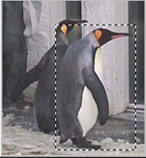

section 04
写真合成の実演
それでは今度は、複数の画像を合成して１枚の合成画像を作りましょう。
まず、素材となる画像を用意します。今回はこの２枚（ペンギンと電車）で制作を行います。
|  |
まず「短形選択ツール」を使用し、「ペンギン」の使いたい部分を大まかに選択し、コピーします。 |
|
次に「電車」を開いて下さい。レイヤーパレットを見て左図のようになっていることを確認してください。 | |
|
左図のようになりました。ここでもう一度レイヤーパレットを確認しましょう。 | |
 |
ペーストした画像が「レイヤー１」に貼り付けられてますね。Photoshopでは画像をペーストすると、必ず新しいレイヤーが自動的に作られて、そこにペーストされます。 |
|
このままでは「ペンギン」の背景の一部が残っていて不自然ですね? | |
|
細かい部分は消しゴムの大きさを変えて、ガシガシ消していきましょう。消し忘れが無いように、たまに「背景」を非表示してみてもいいでしょう。 | |
|
必要な部分だけ取り出せましたね。コツは「ちょっと消しすぎかな？」と思うまで消してしまうことです。消しすぎてもやり直しできるので、思い切って消してしまいましょう。 | |
|
次はペンギンを背景の電車に合わせるために、場所と大きさを調節しましょう。 | |
|
するとペンギンの周りに、このような四角形が出てきます。 | |
|
ここで納得いくまで画像をいじくったら、右上の○を押します。 | |
|
これで完成です。 | |
|
現在のレイヤーはこんな感じです。 繰り返しになりますが、このレイヤーはPhotoshopで一番重要な機能です。実際に自分で使用して慣れていってください。 |
|
ちょっと待った！ | |
| → |
|
A「せっかく透明な部分を作っても、JPG形式で保存すると、透明な部分は「白」という色に自動的に置き換えられてしまいます。 | |
|
すると左図のようなウィンドウが現れます。ウィンドウが現れたら右上に注目してください。ここにある項目のうち、左図で赤線が引かれている項目は、
左図と同じ状態にしてください。それが終わればOKを押して、保存する場所を選び保存するだけです。 | |
|
では早速、保存した透過GIFファイルを呼び出してみましょう。今度は透明な部分は、透明なまま残っています。 | |
|
しっかりと透明な状態に戻すには【イメージ】タグの中から【モード】→【RGBカラー】という所にクリックして、チェックを入れましょう。 | |
|
これで後は画像全体を選択して、別の上の画像の上にペーストするだけで、左図のようになります。 |